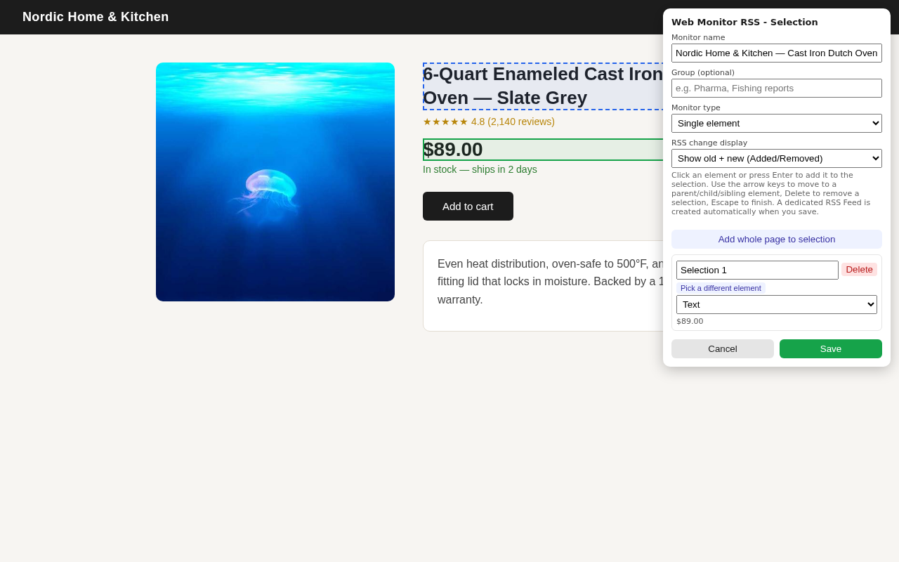
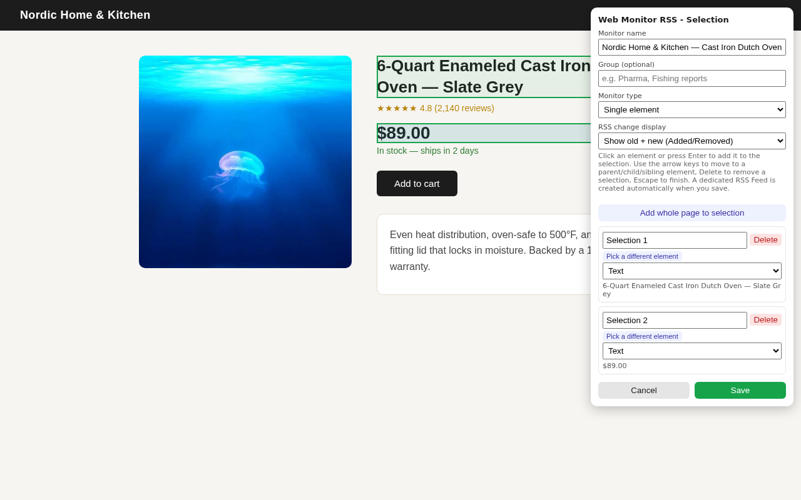
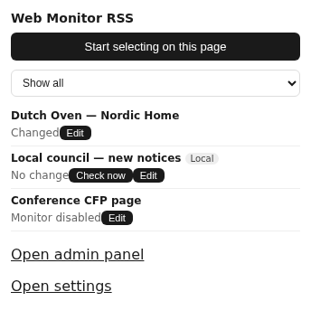
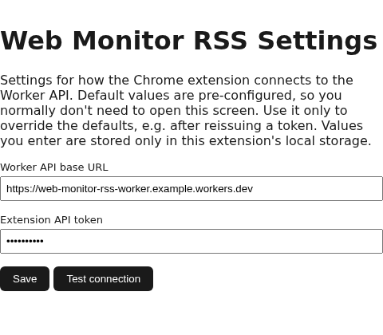

これは何？ What is this?
RSSを配信していないページも、監視できる Turn any webpage into an RSS feed — even one with no feed of its own
価格表の1行、お知らせページの新着だけ、在庫状況——ページ全体ではなく「ここだけ」を見たいことは多いはずです。Web Monitor RSSのChrome拡張機能は、ページ上でクリックするだけでその範囲を選択でき、変更があったときだけRSSフィードに届きます。 A single price, just the newest entry on a notices page, a stock-status line — often you only care about one small part of a page, not the whole thing. Web Monitor RSS's Chrome extension lets you point-and-click the exact element you care about, and delivers a private RSS item only when it actually changes.
本体はオープンソースで、Cloudflare Workers上にご自身でデプロイして使う自己ホスト型のツールです。データは開発者（Margherita Works）には一切送信されません——利用者ご自身が用意したバックエンドにのみ送られます。 The backend is open source and self-hosted — you deploy your own copy to Cloudflare Workers. No data is ever sent to the developer (Margherita Works); it only ever goes to the backend URL you configure yourself.
スクリーンショット Screenshots
拡張機能の画面 The Extension

ページ上でクリックして範囲を選択 Click to select a part of any page

複数の範囲をラベル付きで登録 Add multiple labeled selections per Monitor

登録済みMonitorの状態を一覧表示 See all your Monitors at a glance

ご自身のWorker URLとトークンを設定 Point it at your own Worker URL and token
はじめかた Getting Started
10分でセットアップ Set Up in About 10 Minutes
- Chrome ウェブストアからこの拡張機能をインストールする Install this extension from the Chrome Web Store
- GitHubリポジトリの「Deploy to Cloudflare」ボタンから、ご自身のCloudflareアカウントにバックエンドをデプロイする Deploy your own backend via the "Deploy to Cloudflare" button on the GitHub repository
- 拡張機能のオプション画面に、デプロイされたWorker URLとトークンを入力する Enter your deployed Worker URL and token in the extension's options page
- 監視したいページで拡張機能を開き、範囲を選んで保存する Open the extension on any page you want to watch, select an element, and save
FAQ
よくある質問 Frequently Asked Questions
Q. 無料で使えますか？Q. Is this free to use?
拡張機能自体は無料です。バックエンドはご自身のCloudflareアカウントにデプロイするため、Cloudflareの無料枠の範囲で個人利用であればほぼ無料で運用できます。The extension itself is free. The backend runs on your own Cloudflare account — for personal use, it comfortably fits within Cloudflare's free tier.
Q. Margherita Worksがホスティングしてくれるサービスはありますか？Q. Do you offer a hosted version I can just sign up for?
いいえ。現時点でホスト型サービスとして運営する予定はありません。オープンソースのコードをご自身でデプロイしてお使いいただく形のみです。No — there is no plan to run this as a hosted service. It's open source software you deploy and run yourself.
Q. ログインが必要なページも監視できますか？Q. Can it monitor pages behind a login?
いいえ。ログイン情報・Cookie・セッションを保存する機能はなく、公開ページのみを対象としています。No. It never stores login credentials, cookies, or sessions, and is designed only for public pages that don't require a login.
Q. CAPTCHAやBot対策を回避しますか？Q. Does it bypass CAPTCHAs or bot detection?
いいえ。ステルス機能や回避目的の実装は一切行っていません。サイト側にブロックされた場合は、その旨がエラーとして記録されます。No. It implements no stealth or evasion techniques. If a site blocks automated access, that's recorded as an error, not worked around.
お問い合わせ Contact
サポートへのお問い合わせ Get in Touch
バグ報告・機能リクエストはGitHubのIssueへ、その他のご質問はメールでお気軽にどうぞ。Bug reports and feature requests are welcome as GitHub Issues; general questions are welcome via email.